- Document
- Paris, BnF, ms. Espagnol 318, no. 94, ff. 120r-121v (Gallica
btv1b52503046q, views 452-455). Juan de Lanuza, viceroy of Sicily, to King Ferdinand, Messina, 27 April 1503. - New
- A first reading. The key is rebuilt from the letter itself. It is a reading in large part, not a full one: 64 code words have no value. We found no earlier reading and no printed text.
- Not seen
- The original key ("Cifra del visorrey", Real Academia de la Historia, 9/15 ff. 1-6) is not online and was not seen. The published keys of the Catholic Monarchs do not fit.
The key
A symbol alphabet with several signs for each letter (44 signs for 20 letters), and code words of two to four letters for common words and names. Two code words stand for letters: otto is c, and malz is ll. The names of the signs are ours. The image of a sign is cut from the three lines below.
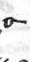
o-a121 times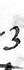
3a47 timesa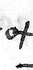
otb24 timesbFc28 timesc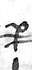
Pd108 times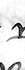
Nd35 timesd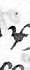
xe181 times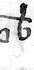
tbe121 timestboe18 timese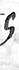
Gg29 times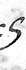
5g9 timesEg1 timesg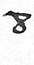
8h28 timesh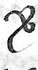
&i89 times:.i58 timesZi9 timesi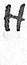
Hl47 times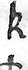
kl29 timeslC.m36 times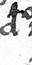
aom12 timesm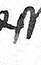
ssn171 times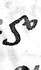
5on55 timesAn7 timesn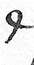
Ro163 times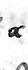
alo67 timesXo29 timeso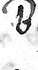
Bp41 timesdlp31 timespVq21 timesq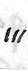
IIIr118 times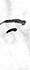
=r61 timesMr15 timesr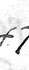
7s126 times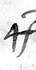
ffs42 times9s18 timess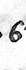
6t89 times+t11 times9tt2 timest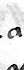
au112 times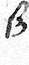
ßu47 timesu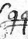
QQy27 timesQy2 timesy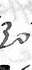
3oz15 timeszIn each box: the sign, our name for it, its letter, and how many times the letter has it. A box with no image: the sign is not in the three lines below. The shapes in words: transcription/SIGNS.md.
The code words of the three lines:
| Code word | Value | Basis |
|---|---|---|
| mas | el | A: fixed by several clear contexts |
| mog | del | A: fixed by several clear contexts |
| mok | dar | A: fixed by several clear contexts |
| mub | la | A: fixed by several clear contexts |
| muy | de | A: fixed by several clear contexts |
| mys | en | A: fixed by several clear contexts |
| nym | han | B: fits every place, but few places |
| otto | c | A: fixed by several clear contexts |
| pet | para | A: fixed by several clear contexts |
| qa | y | A: fixed by several clear contexts |
| raz | que | A: fixed by several clear contexts |
All 36 code words with a value, and the 64 with none: KEY_TABLE.md. The key as a table for the decoder: key.py.
Worked example
Each box holds one token of the first transcription pass: its image, its name, and its value by the key. The line under a group of boxes gives the word; the word division is ours.
f. 120r, line 1, tokens 13 to 33: after the rout
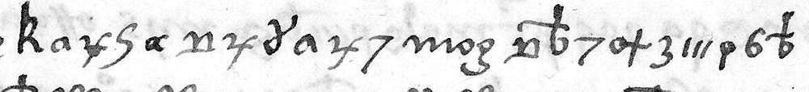
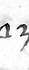
xedlpauxe7sdepues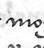
mogdeldel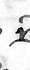
Ndtbe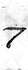
7sotb3aIIIrpa6t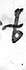
tbedesbarateluego depues del desbarate
The viceroy wrote right after the "desbarate" (the French defeat near Gioia, 21 April 1503).
The line begins with code words that have no sure value; the example starts at the first sign of "luego". The two transcription passes have the same token in 20 of these 21 places.
f. 120r, line 7: the captains in the fortress
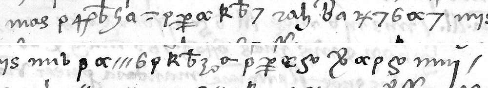
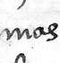
maselelpaffs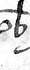
tbeGg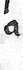
au=r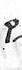
paPd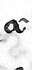
alo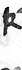
kl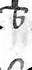
tbe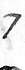
7saseguradoles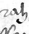
razquequeBp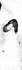
au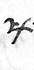
xe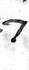
7s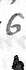
6t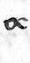
alo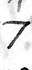
7spuestosmysenenmublalapaaloIIIr6tpakltbe3ozo-aaortalezapaaPdalo5ondon&ialopa5onioanmuydede/stopel, asegurandoles que, puestos en la fortaleza a don Joan de
Don Juan de Cardona, Antonio de Leyva and Carvajal were put in the fortress so that an inventory could be made and a good account given.
Two letters differ. The key gives aseguradoles; the reading file writes "asegurandoles". The key gives aortaleza; the reading file writes "fortaleza": the transcription has one name, p, for the sign of a and the sign of f, and the reading restores f by context. The name "Cardona" follows in line 8. The two transcription passes have the same token in 41 of these 42 places.
f. 121r, line 21: the threat to don Hugo
y me han dicho stuvieron para darle de punyaladas
Some knights told him they came near to stabbing don Hugo.
The first token is a code word with no value. The two transcription passes have the same token in 34 of these 34 places.
How sure
| Measure | Value |
|---|---|
| Cipher lines | 98, on three pages |
| Tokens identical in two blind transcription passes | 93.2 %, 96.0 % and 92.9 % for the three pages |
| Sign tokens with a letter value | 2,521 of 2,537 |
| Code-word tokens with a value | 570 of 677 |
| Five-letter-group score of the key | -12.1 to -12.4; 200 shuffled keys: mean -18.5, best -17.5; real Spanish: -10.8 |
Outside check. The names agree with the chronicles of the Great Captain; they were not used as a crib. Zurita (Historia del rey don Hernando, book 5, ch. 25 and 29) used the same matter: he has "Hernando de Valencia", "Alonso Guerrero", the anger of the Cardonas, and Gioia "puesto a saco, y quemado". He does not have the sack of the fortress by night, the inquiry, or the threat to stab don Hugo. A search of the printed sources found no clear text of the letter.
What is not resolved
- 64 code words have no value. They stand mostly in the stretches that the reading marks with "...".
- The transcription does not separate the sign for f from one sign for a. The letter f was restored by context.
- Three signs that look alike were confused by the passes. A third pass can change single words.
- A line that we do not show for this reason: f. 120r, line 12, where the reading has "la camara de mosse de Aubeni". The two passes give clmara and mosae or mousae there. Both passes are in
DECODE_RAW.md.
Edited reading and English summary: READING.md. Folder: espagnol-318.